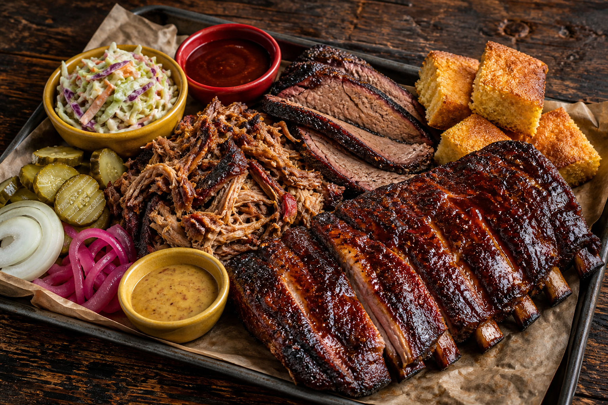
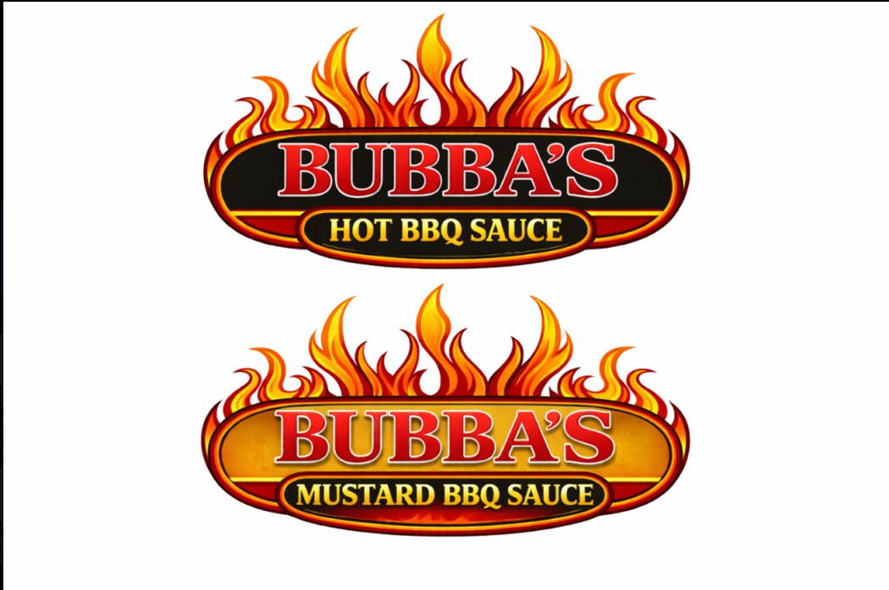

THE BBQ LINEUP
- Half-rack or full-rack ribs
- ½ lb beef brisket sandwich
- ½ lb pulled pork sandwich
- ½ lb sweet Cajun chicken
- Smoked sausages
- Chicken wings
- All-meat sample platter
BBQ CATERING & FOOD TRUCK · NIMROD, MN
Weddings, special events, and whole hog roasts.
Bring everyone together over Bubba’s BBQ.
CATERING WEDDINGS & SPECIAL EVENTS

Illustrative image · not a confirmed menuGATHER ROUND
From the food truck to your next gathering.
Catering. Weddings. Special events. Whole hog roasts.
Tell Bubba’s what you’re planning and call to discuss the menu, location, and availability.
FIND THE FOOD TRUCK
Upcoming public events and food-truck locations. All times are local to Minnesota.
No upcoming dates are posted here yet. Check Bubba’s Facebook page for the latest announcements, or call before making a trip.
Find updates on Facebook ↗AROUND THE COMMUNITY
Bubba’s Facebook posts show the food truck at festivals, car shows, and community gatherings across the area.
ALSO AT BUBBA’S
Meat processing & butchering.
Call Bubba’s to discuss your processing needs, scheduling, and pricing before bringing in any meat.
Ask about accepted animals, cut options, packaging, and drop-off requirements. Availability and service details are confirmed directly with the business.
218-270-4BBQMEET THE SAUCES
Hot BBQ and Mustard BBQ.
Interested in the sauces? Ask Bubba’s about availability.

Bubba’s Hot BBQ Sauce
Bubba’s Mustard BBQ Sauce
SERVICE PAYMENTS
Once you’ve agreed on your service and price with Bubba’s, use this section for a deposit or remaining balance.
Online payments are not available yet. Contact Bubba’s to arrange payment. This form is a preview and does not send or save information.
Do not enter card numbers, banking details, or passwords here.
Payment questions? Call 218-270-4227MINNESOTA · STATEWIDE COVERAGE
We accept inquiries from across Minnesota. Check your ZIP code, then choose a preferred date for catering, an event, or meat processing.
This is a date request, not a live availability calendar. Bubba’s must confirm the date, price, and service arrangements before you make plans.
Meat processing may require drop-off. Coverage does not promise pickup or travel without an additional fee—ask when arranging service.
ZIP checks happen on your device. This page does not save your information. The email button opens your email app; you review and send the request yourself.
ZIP records: GeoNames, CC BY 4.0, updated September 10, 2026. Missing a Minnesota ZIP? Call us to check.
CALL BUBBA’S
Discuss catering, your next event, or our additional meat processing services.
218-270-4BBQNimrod, Minnesota · Call for pricing and availability.
Visit Bubba’s on Facebook ↗